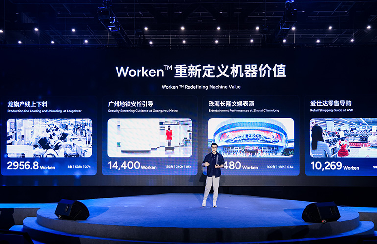

AGIBOT (Шанхай, основана в 2023-м, один из мировых лидеров поставок человекоподобных роботов) предложила новый способ измерять ценность автопарка: Worken = число активных роботов × часы автономной работы × коэффициент эффективности вывода. Первый множитель считает машины, реально выполняющие задачи, а не числящиеся на складе; второй — время автономной работы, а не простого включения; третий сверяет выработку с эталоном — например, с объёмом приемлемой работы человека по установленным нормам. По замыслу авторов, это переводит разговор с «сколько роботов собрали» в плоскость «сколько полезной работы они реально сделали» — особенно важно, когда софт и ИИ-модели позволяют одному и тому же «железу» за срок службы сделать заметно больше.
Вместе с Worken AGIBOT показала третье поколение аппаратной архитектуры AHA3 («три интеллекта в одном»: движение, взаимодействие и выполнение задач в единой платформе, с жидкостным охлаждением суставов и защитой IP67), новую линейку кистей OmniHand 3 и тактильный захват OmniPicker 3. В движении — обновления фреймворка AGILE с «самоэволюционирующим агентом», в моделях — предпросмотр embodied-модели GO-3 с архитектурой WRAM (рассуждение, предсказание и действие в одном контуре), которая, по данным компании, заняла первые места на бенчмарках RoboDojo, RoboTwin и RoboColiseum, а также омни-модальная модель общения WITA-Omni 1.0 с полнодуплексным диалогом и офлайн-работой на устройстве.
Официально запущен тяжёлый промышленный робот G2 Max: 21 степень свободы, грузоподъёмность двух рук до 40 кг, регулируемая высота работы от 0,1 до 2,5 м — для логистики и производственной обработки. Объявлен выход Link-U OS 1.0 (операционную систему обещают открыть до конца года) и Genie Studio 2.0 — «конструктор» для развёртывания роботов на рабочих местах. На мероприятии также представлен отраслевой отчёт «2026 Embodied Intelligence Industry Innovation Report», подготовленный China Economic Information Service вместе с Шанхайским инновационным центром CAICT, — там Worken уже упоминается как элемент отраслевого анализа.
Счёт произведённых роботов давно стал рекламной линейкой: AGIBOT гордится 20-тысячным роботом с конвейера и первым местом IDC по мировым поставкам человекоподобных машин в первом полугодии 2026-го. Но покупателю склада или завода всё равно, сколько корпусов отгружено, — ему нужно предсказуемое число выполненных задач. Если хотя бы часть индустрии подхватит «машино-часы полезной работы», сравнение вендоров станет честнее: одна и та же поставка из ста роботов у разных компаний может давать кратно разную выработку.